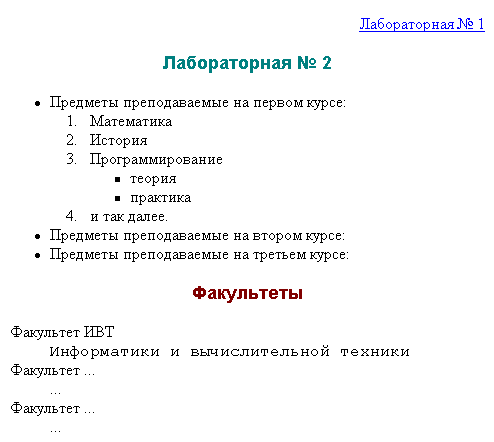

Сибирский государственный университет
телекоммуникаций и информатики
Лабораторные задания по курсу
"Введение в Интернет"
Лабораторная работа N 1.2
Базовое форматирование текста
Задание
Cоздать документ, в котором в заголовке окна браузера
должна быть надпись "Лабораторная 2".
- Задать разный цвет для непосещенной, посещенной и активной гиперссылок.
- Фон задать в виде рисунка из имеющихся в директории
FONS (L:/TXT/INTERNET/FONS/).
- Обратить внимание на использование шрифтов
Arial и Courier New.
- "Лабораторная № 1" - гиперссылка на соответствующий файл - должна быть справа на экране;
- "Лабораторная № 2" - заголовок (по центру экрана и соответствующим шрифтом);
- "Предметы" оформить в виде вложенных списков по образцу предложенному ниже;
- "Факультеты" - заголовок (по центру экрана и соответствующим шрифтом);
написать сокращенное и расшифрованное название факультетов с использованием списков определений.
Это должно выглядеть так:
